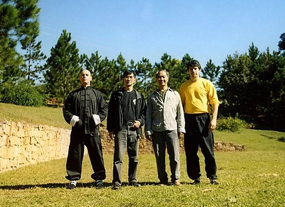

Principais Teorias no Wing Chun
Por Thomas Pinheiro
O Wing Chun é uma arte marcial baseada em praticidade e bom senso e que ganhou acentuada reputação como sistema de combate no qual o adversário é mantido a curta distância (infight). As teorias de Wing Chun não têm limite quanto à aplicação, portanto citarei apenas principais para que se possa ter uma maior compreensão do sistema. Um bom lutador de Wing Chun, para assim ser considerado, tem que ser capaz de demonstrar tais teorias em nível prático, ou seja, executá-las na realidade e sob diferentes circunstâncias.
Econômia de Movimentos: Em Wing Chun, todas as técnicas são econômicas, não existe disperdício de movimentos. Enquanto uma das mãos ataca, a outra defende ou controla o adversário. O lutador ataca diretamente sobre a linha central (menor distância entre duas pessoas). Economia de movimento, em outras palavras, é conservar toda a "stamina" possível de modo a contar com uma reserva de energia numa eventual emergência.
Chi: A energia que todas as pessoas possue em dentro do corpo. Para conseguir uma melhor circulação dessa energia, o lutador deve se manter calmo e relaxado. Se puder controlar o chi e usá-lo para aumentar a força muscular, o lutador tornará o corpo todo mais forte pelo aumento de energia externa.
Relaxamento: O Wing Chun é práticado com a idéia de que "a verdadeira força vem da suavidade", o que significa que todas as técnicas são executadas primeiro suave e relaxadamente para transformarem-se depois na força correta do estilo.
Sensibilidade: O Wing Chun é baseado em sensibilidadde. O praticante a desenvolve primeiro de maneira a sentir e controlar os próprios movimentos para então sentir e controlar os do oponente. A sensibilidade é necessária para o desenvolvimento do tipo correto de força e para o reconhecimento mais apropriado do ataque. Esse reconhecimento não deve, pois, ser baseado apenas na visão, o praticante deve sentir a abertura do oponente.
Momento Certo: Em Wing Chun, o momento certo de atacar ou defender é decidido através da capacidade de sentir, pelos braços, as oportunidades apresentadas pelo oponente. Detectar o momento correto pela sensibilidade dos braços aumenta em muito a probabilidade de acertos. Por outro lado, o praticante que busca seus movimentos em aberturas detectadas pela visão tem maior chance de ter seus ataques bloqueados, os quais se tornam consequentemente, menos efetivos.
Distância: O praticante de Wing Chun aprende a distância correta para a aplicação de cada técnica de maneira a ser eficiente em seus golpes. Através de exercícios de parceiro, pratica e desenvolve o julgamento dinâmico de distância e o ajuste da posição, produzindo estrutura mais forte e econômica em cada técnica.
Força: A força do praticante de Wing Chun vem das juntas dos ossos, gerada pelo trabalho coordenado de alinhamento dos ossos, das juntas e dos tendões, com relaxamento dos músculos para explodir então rapidamente, qual a ponta de um chicote. Existem oito tipos de força que ajudam o lutador a fluir e a se ajustar em qualquer situação de combate.
Controle: O lutador de Wing Chun sempre faz por desenvolver o controle de suas técnicas e do próprio corpo de modo a controlar também o adversário. Aprender a dominar seu centro de gravidade e a calcular sua força, sua distância, sua estrutura, assim como o momento certo de fazer a coisa certa é essencial para o praticante ser capaz de se ajustar às dinâmicas condições de uma luta real.
Linha central: O lutador de Wing Chun estuda o oponente através da chamada "linha central". A linha central constitui-se em uma linha imaginária entre o praticante e o adversário. Parte do eixo central do primeiro e vai até o eixo central do segundo. Quando o lutador de Wing Chun ataca, ele o faz pela linha central para obter melhor e mais segura linha de ataque. Quando bloqueia ou controla os ataques do oponente, o faz tirando-o para fora da linha central, de modo a criar aberturas no adversário nas quais possa inserir os próprios ataques.
O corpo como um todo: O lutador de Wing Chun move o corpo como uma única entidade (cabeça, tronco e membros formam uma unidade) para gerar o máximo de força com o mínimo de esforço. Deve combinar ataque, defesa e postura, segundo a idéia de "atacar o oponente executando três movimentos simultâneos" (ataque,defesa e deslocamento).
Estrutura: Todas as técnicas Wing Chun possuem estrutura própria, visando produzir força da maneira mais econômica e eficiente. O praticante aprende a estrutura correta de cada técnica e também como aplicar essa estrutura. Estrutura inclui todo o corpo, que deve funcionar como escora para as técnicas de mãos e pernas. Ao conhecer sua estrutura, o lutador pode receber e localizar as fraquezas do adversário e valer-se delas.
Yin e Yang: O estilo Wing Chun segue a teoria Yin/Yang que afirma estarem as coisas sempre mudando. Obedecendo a essa teoria, o lutador deve desenvolver uma variedade de técnicas baseadas na rotação contínua de ataques em cima, em baixo, à direita, à esquerda, nunca o fazendo com a mesma técnica duas vezes no mesmo lugar.
Preparando Ciladas: O praticante de Wing Chun aprende a "preparar ciladas" ou controlar as armas do adversário, de modo que este não possa mover-se por um instante sequer. Isso lhe dá tempo suficiente para executar ataques sem interferência. O lutador também arma ciladas para mãos, pernas, postura, corpo e até para a mente do adversário.
Mãos auxiliam as pernas, pernas auxiliam as mãos: Em Wing Chun, todo o corpo funciona como uma única peça. Ao chutar, o lutador usa as mãos para controlar o oponente, garantindo assim uma posição forte e equilíbrada. No ataque com os membros superiores, a postura assumida pelo corpo (nesse caso pelas pernas) escora ou auxilia as mãos a produzirem e a absorverem força.
Cabeça de vidro, estômago de algodão, braços e pernas de ferro - Na defesa, o lutador pensa como se tivesse "a cabeça de vidro", que pode ser quebrada facilmente e "o estômago de algodão", que pode ser ferido. Mas os braços e as pernas são "duros como ferro" para assegurando a defesa do restante do corpo.
Fazer o primeiro movimento de modo a controlar o oponente: O Wing Chun é um estilo agressivo de luta. O praticante desenvolve a habilidade de atacar primeiro seguindo o provérbio: "quando você se move, eu o faço mais depressa". Em ataque com uma das mãos, o lutador sempre controla o oponente com a outra para manter-se dono da situação.
Receber o que está vindo, seguir o que está se retirando: Quando ataca, o oponente está vindo, o lutador de Wing Chun recebe esse ataque preparando uma cilada na qual o adversário é pego. Quando puxa o ataque de volta, o oponente está se retirando, o lutador vai então junto com o oponente, porém, movimentando-se bem mais rápido, de modo a controlar a retirada do adversário. Os conceitos anteriores são extremamente importantes para que haja fluência nas técnicas de Wing Chun, mas não se pode esquecer que a teoria vem da prática do treinamento.